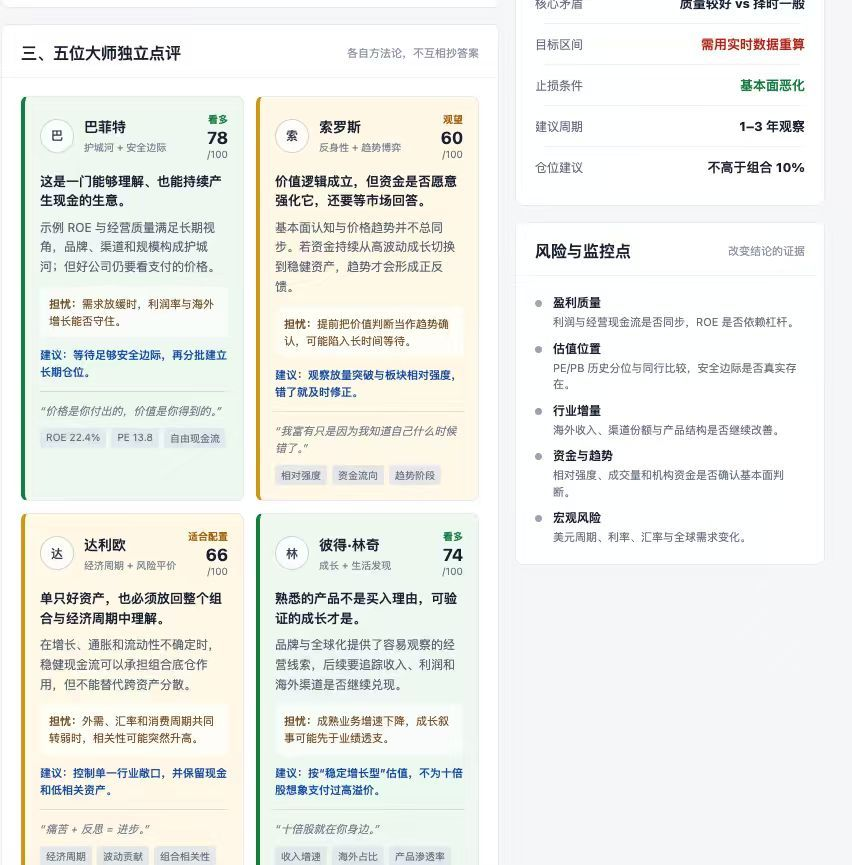
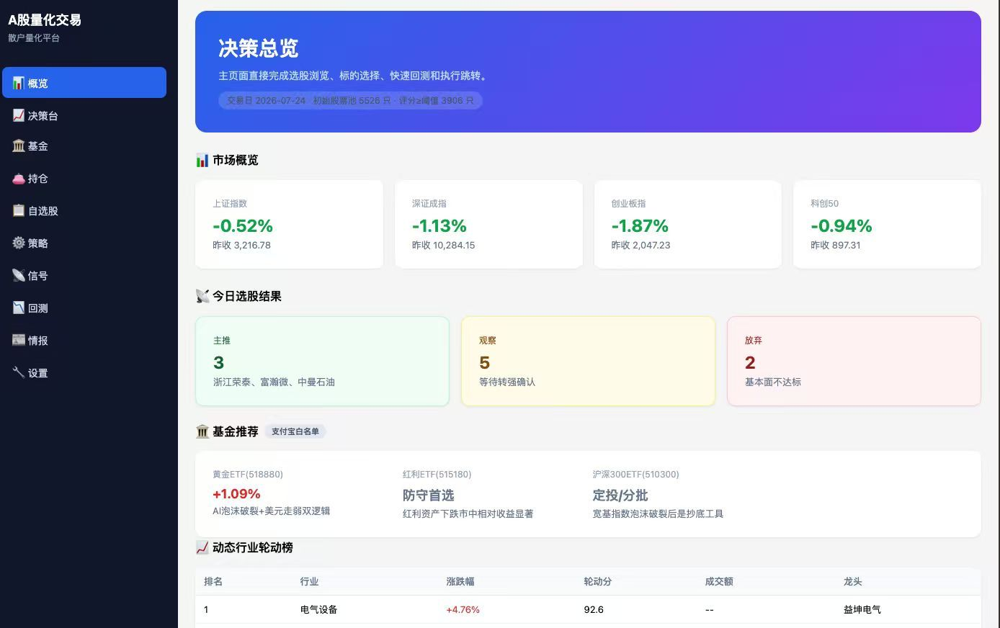
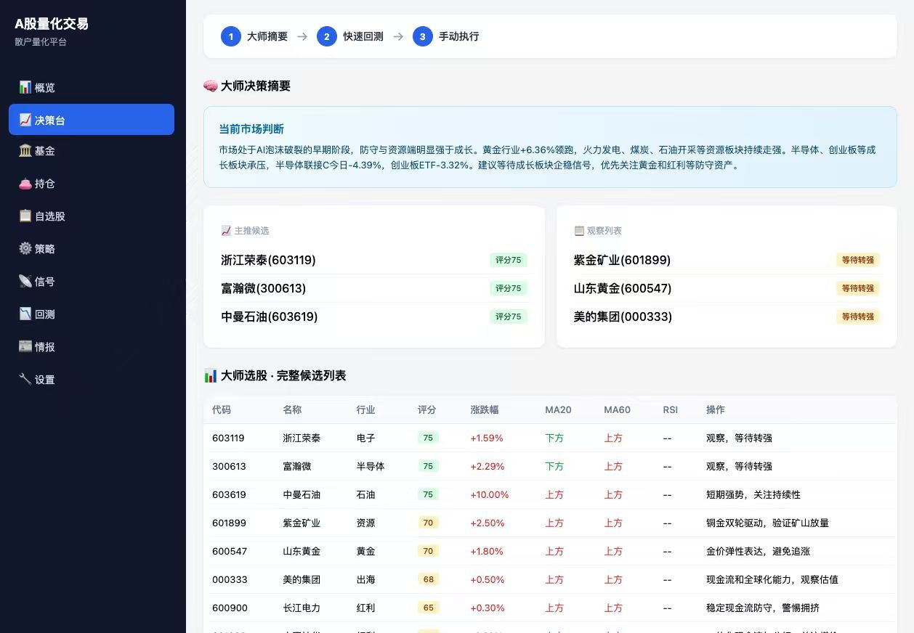
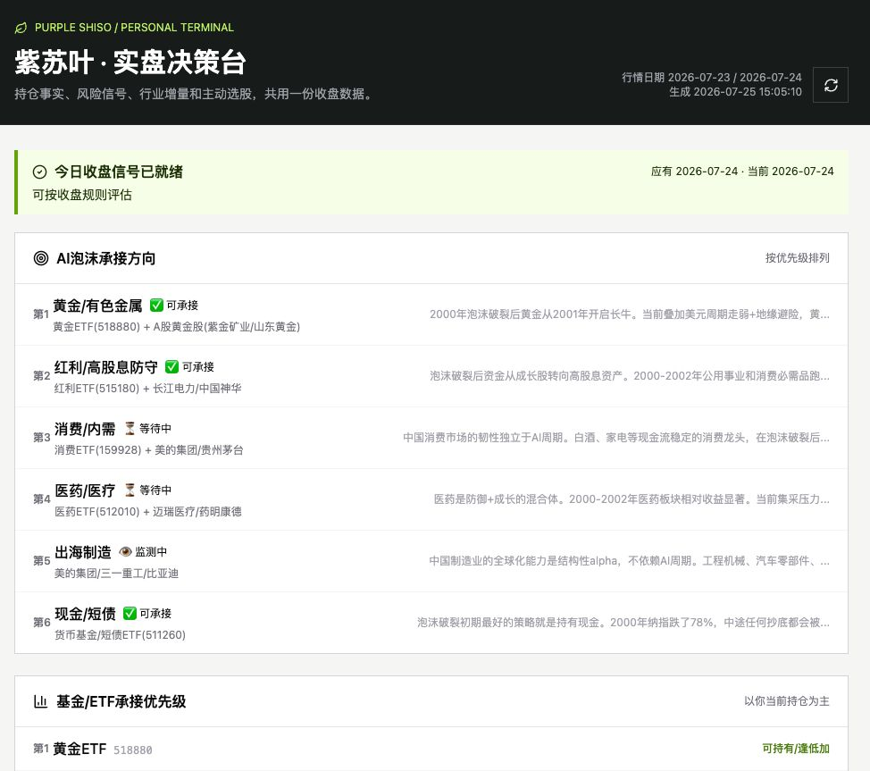
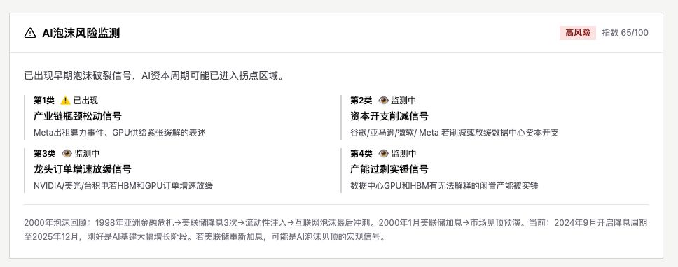

技术思考 · 第 02 篇 / 共 5 篇
AI与投资——决策系统
AI与投资——决策系统
我是 2024 年 11 月开始接触量化投资的。
在这之前，我几乎没有真正意义上理过财。
一方面是因为以前确实没有什么积蓄。虽然我做过 P2P 的大客户销售，对理财产品和金融逻辑多少有一些基础认知，但那时候太年轻，手里根本没有钱。后来又赶上疫情，很多年都处在一种勉强维持生活的状态。
但我一直有一个很明确的想法。
到了我这个年龄，无论如何都要有一定的存款。
它未必意味着财富自由，但至少是未来面对任何风险时的一块缓冲垫。
那几年有一句很流行的话，叫 “F*k You Money”。
意思不是让你真的去和老板翻脸，而是当你面对一份不喜欢的工作、一段糟糕的关系，或者人生里某个不得不做决定的时刻，你手里的钱能给你说”不”的底气。
也是抱着这样的心态，我开始学习量化投资。说实话，一个完全的小白，一头扎进量化投资这个领域，就像刚学会游泳的人直接跳进了深海。
里面全是策略、模型、回测、因子、数据、代码，每一样都比我原来的认知复杂得多。
但反正当时也没什么好怕的。初生牛犊不怕虎。我就拿着自己那点本金，一边学，一边开始做。其实课程到今天我都没有完整上完。因为每次学到一半，我就忍不住开始实操。后来我越来越觉得，很多东西真的不是课程能教会的。
包括对数字的敏感，对风险的感知，对市场节奏的理解，很多时候只能靠自己不断去试、去亏、去修正。
所以，从 2025 年开始，我慢慢有了一个想法。
与其一直研究别人的策略，不如搭一套属于自己的量化系统。
自己搭系统，第一步肯定还是要了解市场。
各种经典策略、不同流派的方法、A 股本身的交易规则，以及作为普通投资者有哪些天然的限制，这些都得先补课。
很多时候，我都觉得自己是站在无数前人失败的肩膀上，一点一点看见这个世界。
现在回头再看自己最开始写的那些策略，很多都挺幼稚，甚至有点好笑。
但没有那些试错，也不会有后面的东西。真正开始记录自己的投资，大概是 2025 年初。第一笔比较完整的投资，其实是黄金。那时候黄金还没有涨到 740 元。中间经历过一些波动，现在回头看，已经算不上什么了，当时却觉得每天都惊心动魄。
那个阶段，我基本还是价值投资的思路。
巴菲特、霍华德·马克斯、达利欧……能找到的大师，我几乎都拿出来研究，希望能把他们的方法拼成一套属于自己的分析框架。

后来才发现，市场不会因为你读过几本书，就按照书里的方式运行。
到了 2025 年 3 月，AI 投资 Skill 开始在各个平台爆火。
当时我其实一直有一个疑问。真正每天都在做交易的人，会为了一个 Skill 放弃自己已经跑了很多年的 Ptrade 吗？至少换成我，我不敢。
当然，如果资金量足够大，愿意尝试也没有问题。所以后来，我给自己的定位一直都很明确。Skill 不负责交易。Skill 负责辅助决策。
也就是说，我把操作和荐股完全拆开。
我的平台每天会根据不同的策略信号，筛选行业龙头、MACD 信号、MA20 信号以及一些符合条件的潜力股，同时支持针对单只股票做进一步分析。

每天收盘以后，它会推送当天所有出现的重要信号。第二天开盘之前，再推送当天值得重点关注的股票。这一套系统，我跑了一段时间。但很快我就发现，它和我的真实交易还是有距离。

因为它不知道我的持仓。
很多时候，我还要把自己的实盘重新发给它。
除此之外，更大的问题来自数据。专业行情数据一直都是门槛。很多数据抓取不到，或者更新不及时。最后，我只能不断去核对结果，或者反复调用 Tushare 的数据重新跑一遍。折腾到后来，我越来越觉得，这套东西放在今天的市场里，已经远远不够了。
最近两个月，整个市场行情都不太好。我又开始重新琢磨一套新的策略。我给它起了一个名字，叫 紫苏叶策略。紫苏叶不是烤肉的主角。但吃过韩式烤肉的人都知道，没有紫苏叶，总觉得少了点什么。

我希望找到的，就是这样的股票。它不是市场最耀眼的那个，也不是体量最大的那个。但当真正的行情启动时，它一定是整个产业链里不可缺少的一环。这个思路，其实很像现在大家都在讨论的 HBM。HBM 不是 AI。但没有 HBM，很多 AI 的故事就讲不下去。我希望找到的，也是这种位置。不起眼，但不可替代。
后来，我又看到一位研究者——Tito Adhikary。
真正吸引我的，并不是他的收益率。而是他的思考方式。他把交易更接近科学研究。整个过程只有三个步骤。
第一步，提出一个能够被验证的假设。
第二步，用历史数据不断调整参数，让假设越来越接近真实结果。
第三步，不急着交易，等数据真正验证之后，再选择合适的时间进场。
看到这里的时候，我突然意识到，真正打动我的已经不是某一个策略
而是这种思考系统。它当然不是帮你选股的，它反映的是在这个股票市场被科学方法验证的时候，它是可以被拿来研究与不断推进的
并且每一次验证结束之后，这套系统还会继续进化。这一点，对我的影响其实比任何一个具体策略都大。

当然，今年的市场并不好。就在这个月，我把今年所有的盈利又全部亏了回去。有时候我也会想，无论做多少分析，写多少策略，回测多少数据，市场本身始终存在着一种无法预测的东西。
后来读《反脆弱》，读《财富的起源》，我越来越认同里面一个观点。
很多经济学描述的市场，其实只是模型里的市场。那个市场足够理性，足够有效，每个人都能获得完整的信息。可现实里的市场从来不是这样。真实的市场有情绪，有恐惧，有贪婪，也有各种无法提前计算的变量。
正是这些细微的变化，才构成了真实世界。它很美，也充满张力。但是，对投资来说，我越来越觉得，真正重要的未必是找到一套永远正确的方法。
而是让自己的心脏更大一点。
不要因为一次亏损，就怀疑整套系统。也不要因为一个自己都解释不了的信号，冲进去追高，或者慌忙离场。
市场每天都在变化。策略也应该不断进化。
但一个人的判断和纪律，始终都应该放在最前面。